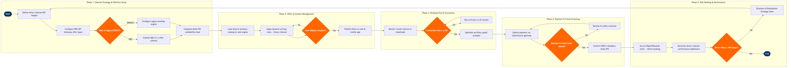

Direct Channel Management (Web & App)
Network Planning & Scheduling › Sales & Distribution · 16 L4 steps · 5 phases · 7 decision gates · Updated 2026-03-18 21:18
📊
Process Flow Diagram (BPMN)

📋
L4 Process Steps
| Step | Step Name | Role / Swim Lane | System | Input | Output | KPI | Dec? | Exc? |
|---|---|---|---|---|---|---|---|---|
Phase 1 1.1 |
Define direct channel KPI targets and benchmarks | Director of Distribution Strategy | Tableau / Power BI | Annual commercial plan; prior-year direct channel share report; GDS cost-per-segment benchmark | Direct channel scorecard with targets: share %, conversion rate, cost per booking, ancillary attach rate | Direct channel share of total bookings ≥ 65%; cost per direct booking ≤ $3.50 vs. GDS ≥ $8.50 | N | N |
| 1.2 | Select distribution schema — NDC 21.3 vs. EDIFACT | Distribution Technology Architect | NDC API Gateway | Agency and TMC capability survey; NDC adoption roadmap; current EDIFACT booking engine contract | Distribution schema decision: NDC 21.3 Offer/Order or legacy EDIFACT booking engine per channel segment | NDC-capable agency coverage ≥ 40% of managed travel volume within 12 months | Y | N |
| 1.3 | Configure NDC API Gateway offer and order schemas | Distribution Systems Analyst | NDC API Gateway | NDC 21.3 IATA standard schema; fare family definitions from Pricing team; ancillary service catalog | Published IATA NDC AirShopping, OfferPrice, and OrderCreate API endpoints; certified schema documentation | API response time ≤ 800ms at p95; schema validation pass rate 100% on IATA conformance test suite | N | Y |
| 1.4 | Integrate Amadeus Altéa PSS real-time availability feed | Distribution Systems Analyst | Amadeus Altéa PSS | NDC API Gateway offer request; Altéa inventory host connection parameters; RBD availability map | Live availability feed confirmed; booking class availability visible in web and app booking engines | Availability feed uptime ≥ 99.95%; stale availability incidents < 2 per month | N | Y |
Phase 2 2.1 |
Load fare products and ancillary catalog to web engine | E-Commerce Product Manager | ATPCO / NDC API Gateway | ATPCO filed fares; ancillary service catalog (baggage, seat selection, meals, lounge); fare family branding rules | Published fare product tiles in web and app; ancillary catalog with pricing loaded; fare family descriptions live | Fare loading accuracy 100%; catalog sync from ATPCO to web engine ≤ 4 hours after fare filing | N | Y |
| 2.2 | Apply dynamic pricing rules for direct channel uplift | Revenue Management Analyst | Amadeus Revenue Management (NRM / AltéaRM) | RM inventory O&D availability; direct channel booking cost differential vs. GDS; promotional calendar | Direct-only fare incentives configured; dynamic pricing rules active in booking engine; GDS parity exceptions documented | Direct channel average fare premium over GDS ≥ 0% (parity floor); promotional uplift in direct conversions ≥ 8% during campaign windows | N | Y |
| 2.3 | Validate fare display and regulatory compliance | Distribution Compliance Analyst | ATPCO / NDC API Gateway | Loaded fare products; DOT full-fare advertising rules (14 CFR Part 399); ancillary disclosure requirements | Compliance sign-off on fare display; all-in pricing confirmed; tax and fee disclosure checklist completed | Zero DOT full-fare advertising violations; fare display QA pass rate 100% pre-launch | Y | N |
Phase 3 3.1 |
Monitor booking funnel conversion metrics in real time | E-Commerce Analytics Manager | Amplitude / Adobe Analytics | Live web and app session data; funnel stage events (search → select → payment → confirm); device and channel segmentation | Real-time funnel dashboard; drop-off stage identification; conversion rate by device type and market | Overall booking conversion rate ≥ 3.5% (search-to-book); mobile app conversion ≥ 4.2%; funnel abandonment at payment ≤ 18% | Y | N |
| 3.2 | Run A/B tests on booking flow UX variants | E-Commerce Product Manager | Amplitude / Adobe Target | Funnel drop-off report; UX hypothesis backlog; statistical significance threshold (95% confidence, n ≥ 5,000 sessions) | A/B test results report; winning variant identified or inconclusive flag; engineering backlog item for implementation | A/B test cycle time ≤ 3 weeks; conversion lift from winning variants ≥ 0.5% per test cycle | Y | N |
| 3.3 | Optimise ancillary upsell prompts at checkout | E-Commerce Product Manager | Amplitude / Amadeus Altéa PSS | Booking engine checkout step; passenger and itinerary data; ancillary pricing rules; upsell placement A/B test results | Configured upsell modules (seat upgrade, extra bag, EarlyBird equivalent, travel insurance); personalised offer rendering by traveller segment | Ancillary attach rate ≥ 45% of direct bookings; average ancillary revenue per direct booking ≥ $28 | N | N |
Phase 4 4.1 |
Submit payment to CyberSource gateway and tokenise card | Payments Operations Analyst | CyberSource Payment Gateway | Customer payment details (card or digital wallet); booking total; 3-D Secure 2.0 authentication trigger | Payment authorisation response; tokenised card stored for future purchases; transaction ID linked to PNR | Payment authorisation success rate ≥ 97%; 3DS2 frictionless flow rate ≥ 85%; gateway downtime ≤ 0.05% monthly | Y | Y |
| 4.2 | Screen transaction for fraud risk with Accertify | Payments Operations Analyst | Accertify (Fraud Management Platform) | Payment authorisation token; device fingerprint; IP geolocation; booking velocity signals; passenger name | Fraud risk score; approve / review / decline decision; case flagged for manual review if score 60–80 | Fraud chargeback rate ≤ 0.05% of transaction value; false positive decline rate ≤ 0.8%; manual review queue cleared within 2 hours | Y | Y |
| 4.3 | Confirm booking and issue PNR in Amadeus Altéa PSS | Distribution Systems Analyst | Amadeus Altéa PSS | Successful payment authorisation; passenger data (APIS fields); fare and ancillary items; flight inventory segment | Confirmed PNR with all segments, ancillaries, and payment record; booking confirmation email triggered | PNR creation success rate ≥ 99.9%; confirmation email delivery within 60 seconds of booking; seat inventory decremented correctly 100% | N | Y |
Phase 5 5.1 |
Accrue Rapid Rewards miles for direct booking | Loyalty Systems Analyst | Amadeus Altéa PSS / Loyalty Platform | Confirmed PNR; Rapid Rewards member number; base fare paid; fare class earning multiplier rules | Miles posted to member account; bonus miles for direct channel booking applied; accrual confirmation in member portal | Miles posting accuracy 100%; accrual posted within 72 hours of booking; direct channel bonus miles correctly applied ≥ 99.5% of eligible transactions | N | Y |
| 5.2 | Generate direct channel performance dashboard | E-Commerce Analytics Manager | Tableau / Power BI | Booking transaction data; channel attribution; ancillary revenue; fraud loss data; conversion funnel metrics; Rapid Rewards accrual volumes | Weekly direct channel performance dashboard: share %, booking volume, revenue per booking, ancillary attach, cost per booking, fraud rate | Dashboard refresh latency ≤ 4 hours; direct channel share reported to VP-level weekly; data completeness ≥ 99% | N | N |
| 5.3 | Review direct channel share vs. target and escalate gaps | Director of Distribution Strategy | Tableau / Power BI | Weekly direct channel performance dashboard; annual KPI scorecard; commercial strategy review cadence | Gap analysis report; corrective action plan (promotions, UX fixes, NDC push, agency incentive review) if share < 65% target | Direct channel share ≥ 65%; month-over-month share growth ≥ 0.5pp when below target; corrective action plan issued within 5 business days of confirmed underperformance | Y | N |
📋